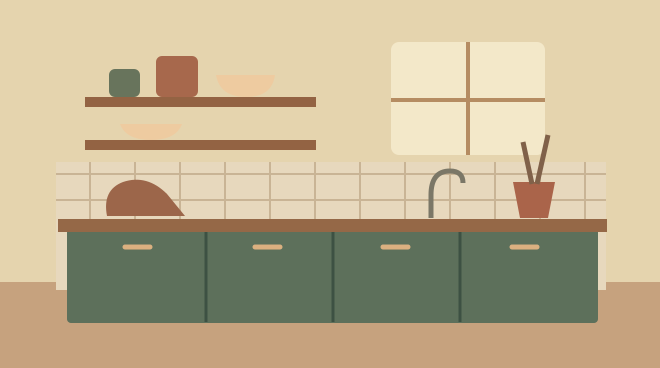

03 / COZINHA
Uma cozinha que facilita a rotina
Organize os utensílios por tarefa e preserve espaço na bancada para preparar alimentos.

01
Organize por área de uso
Guarde panelas perto do fogão e tábuas perto da área de preparo. Reúna os itens usados juntos, como canecas e filtro, para facilitar o café da manhã.
02
Libere a bancada
Deixe à vista os utensílios usados diariamente. Guarde os aparelhos de uso esporádico em um armário acessível para recuperar espaço de preparo.
03
Aproveite a parede
Uma prateleira rasa pode acomodar potes leves ou canecas. Escolha um ponto que não atrapalhe a abertura das portas e mantenha os itens longe de calor e umidade.